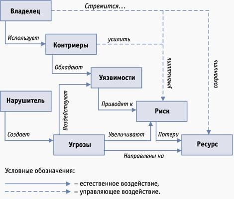

В соответствии со ст. 20 Федерального закона «Об информации, информатизации и защите информации» целями защиты информации являются в том числе: предотвращение утечки, хищения, утраты, искажения, подделки информации; предотвращение несанкционированных действий по уничтожению, модификации, искажению, копированию, блокированию информации; предотвращение других форм незаконного вмешательства в информационные ресурсы и информационные системы.
Главная цель любой системы информационной безопасности заключается в обеспечении устойчивого функционирования объекта: предотвращении угроз его безопасности, защите законных интересов владельца информации от противоправных посягательств, в том числе уголовно наказуемых деяний в рассматриваемой сфере отношений, предусмотренных Уголовным кодексом РФ, обеспечении нормальной производственной деятельности всех подразделений объекта. Другая задача сводится к повышению качества предоставляемых услуг и гарантий безопасности имущественных прав и интересов клиентов.
Для этого необходимо: – отнести информацию к категории ограниченного доступа (служебной тайне);
– прогнозировать и своевременно выявлять угрозы безопасности информационным ресурсам, причины и условия, способствующие нанесению финансового, материального и морального ущерба, нарушению его нормального функционирования и развития8;
– создать условия функционирования с наименьшей вероятностьюреализации угроз безопасности информационным ресурсам и нанесения различных видов ущерба;
– создать механизм и условия оперативного реагирования на угрозы информационной безопасности и проявления негативных тенденций в функционировании, эффективное пресечение посягательств на ресурсы на основе правовых, организационных и технических мер и средств обеспечения безопасности;
– создать условия для максимально возможного возмещения и локализации ущерба, наносимого неправомерными действиями физических и юридических лиц, и тем самым ослабить возможное негативное влияние последствий нарушения информационной безопасности.
При выполнении работ можно использовать следующую модель построения корпоративной системы защиты информации (рис. 1), основанную на адаптации Общих Критериев (ISO 15408) и проведении анализа риска (ISO 17799). Эта модель соответствует специальным нормативным документам по обеспечению информационной безопасности, принятым в Российской Федерации, международному стандарту ISO/IEC 15408 "Информационная технология – методы защиты – критерии оценки информационной безопасности", стандарту ISO/IEC 17799 "Управление информационной безопасностью" и учитывает тенденции развития отечественной нормативной базы (в частности, Гостехкомиссии РФ) по вопросам защиты информации.

Рис. 1. Модель построения корпоративной системы защиты информации
Представленная модель защиты информации – это совокупность объективных внешних и внутренних факторов и их влияние на состояние информационной безопасности на объекте и на сохранность материальных или информационных ресурсов.
Рассматриваются следующие объективные факторы: – угрозы информационной безопасности, характеризующиеся вероятностью возникновения и вероятностью реализации;
– уязвимости информационной системы или системы контрмер (системы информационной безопасности), влияющие на вероятность реализации угрозы;
– риск – фактор, отражающий возможный ущерб организации в результате реализации угрозы информационной безопасности: утечки информации и ее неправомерного использования (риск в конечном итоге отражает вероятные финансовые потери – прямые или косвенные).
Для построения сбалансированной системы информационной безопасности предполагается первоначально провести анализ рисков в области информационной безопасности. Затем определить оптимальный уровень риска для организации на основе заданного критерия. Систему информационной безопасности (контрмеры) предстоит построить таким образом, чтобы достичь заданного уровня риска.
Предлагаемая методика проведения аналитических работ позволяет полностью проанализировать и документально оформить требования, связанные с обеспечением информационной безопасности, избежать расходов на излишние меры безопасности, возможные при субъективной оценке рисков, оказать помощь в планировании и осуществлении защиты на всех стадиях жизненного цикла информационных систем, обеспечить проведение работ в сжатые сроки, представить обоснование для выбора мер противодействия, оценить эффективность контрмер, сравнить различные варианты контрмер.
В ходе работ должны быть установлены границы исследования. Для этого необходимо выделить ресурсы информационной системы, для которых в дальнейшем будут получены оценки рисков. При этом предстоит разделить рассматриваемые ресурсы и внешние элементы, с которыми осуществляется взаимодействие. Ресурсами могут быть средства вычислительной техники, программное обеспечение, данные, а также в соответствии со ст. 2 Федерального закона "Об информации, информатизации и защите информации" – информационные ресурсы – отдельные документы и отдельные массивы документов, документы и массивы документов в информационных системах (библиотеках, архивах, фондах, банках данных, других информационных системах). Примерами внешних элементов являются сети связи (абз. 4 ст. 2 Федерального закона "О связи"), внешние сервисы и т. п.
При построении модели будут учитываться взаимосвязи между ресурсами. Например, выход из строя какого-либо оборудования может привести к потере данных или выходу из строя другого критически важного элемента системы. Подобные взаимосвязи определяют основу построения модели организации с точки зрения ИБ.
Эта модель, в соответствии с предлагаемой методикой, строится следующим образом: для выделенных ресурсов определяется их ценность, как с точки зрения ассоциированных с ними возможных финансовых потерь, так и с точки зрения ущерба репутации организации, дезорганизации ее деятельности, нематериального ущерба от разглашения конфиденциальной информации и т. д. Затем описываются взаимосвязи ресурсов, определяются угрозы безопасности и оцениваются вероятности их реализации.
На основе построенной модели можно обоснованно выбрать систему контрмер, снижающих риски до допустимых уровней и обладающих наибольшей ценовой эффективностью. Частью системы контрмер будут рекомендации по проведению регулярных проверок эффективности системы защиты.
Обеспечение повышенных требований к ИБ предполагает соответствующие мероприятия на всех этапах жизненного цикла информационных технологий. Планирование этих мероприятий производится по завершении этапа анализа рисков и выбора контрмер. Обязательной составной частью этих планов является периодическая проверка соответствия существующего режима ИБ политике безопасности, сертификация информационной системы (технологии) на соответствие требованиям определенного стандарта безопасности.
По завершении работ, можно будет определить меру гарантии безопасности информационной среды, основанную на оценке, с которой можно доверять информационной среде объекта. Данный подход предполагает, что большая гарантия следует из применения больших усилий при проведении оценки безопасности. Адекватность оценки основана на вовлечении в процесс оценки большего числа элементов информационной среды объекта, глубине, достигаемой за счет использования при проектировании системы обеспечения безопасности большего числа проектов и описаний деталей выполнения, строгости, которая заключается в применении большего числа инструментов поиска и методов, направленных на обнаружение менее очевидных уязвимостей или на уменьшение вероятности их наличия.